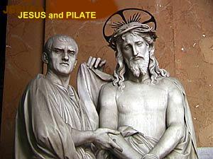

THE STATIONS OF THE CROSS are prayers that reminds us the way of the pain and JESUS' suffering on the course of HIS Divine Redeeming Mission, when in a heroic manner HE assumed all humanity's sins, demonstrating a deep obedience at the ETERNAL FATHER and an infinite Love to whole generations.
The prayer is usually Wednesdays and Fridays on the period of the Lent. Though, for its importance and spiritual value, it should be prayed on other months of the year, for all those that sensitized they want to alleviate the Redeemer's pains, uniting himself at the JESUS' sufferings, making penitence of own blames and of the humanity's transgressions.

To pray THE WAY OF THE CROSS is to revive in the mind and on heart, the greatness of the Love of GOD, that for Saving and Redeeming whole humanity HE gave HIS Divine SON in holocaust, as Perfect Victim for neutralizing the consequences of our sins!


=INDEX=
= 1st, 2nd and 3rd STATIONS OF THE CROSS
= 10th, 11th and 12th STATIONS
= 13th, 14th and 15th STATIONS OF THE CROSS